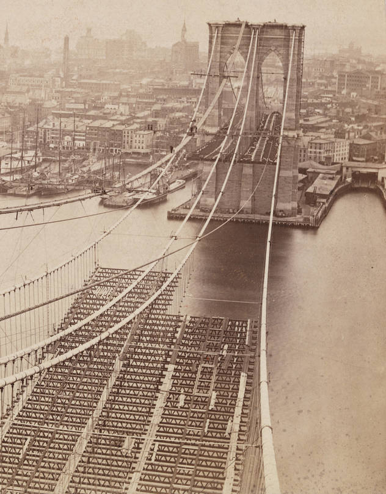

Historical Context
The Brooklyn Bridge, conceived in the historical context of the 19th century, is a testament to the era's technological advancements and societal ambitions. It was built during a time of rapid industrialization and urbanization in the United States, reflecting the spirit of innovation and progress that characterized the period. The bridge's construction coincided with significant historical events and movements, including the influx of immigrants and the rise of New York City as a burgeoning metropolis. The bridge, thus, stands as a historical monument, encapsulating the multifaceted developments and transformations of its time.